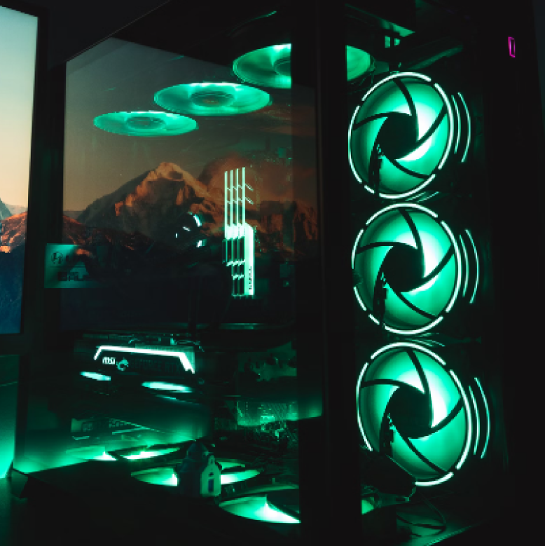
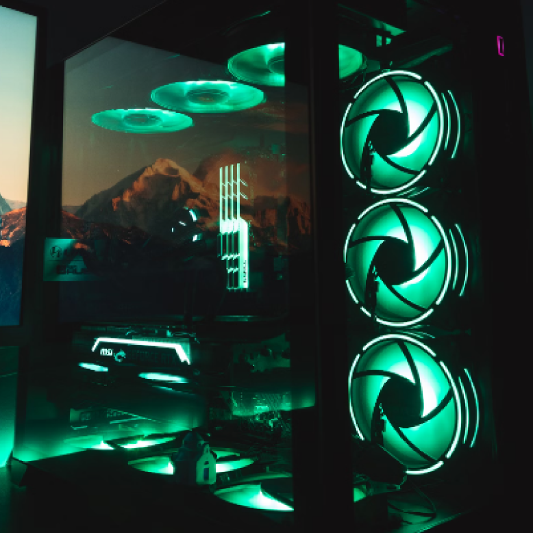

The Wiki of Computer Parts!
 

The Case
The Case is the enclosure that houses and protects the components of a computer, such as the motherboard, CPU, RAM, power supply, storage drives, and cooling systems. It provides a structured layout for these parts, ensures proper airflow for cooling, and offers external access to ports, buttons, and drives. Cases come in various sizes and designs to accommodate different types of hardware and user preferences.
What does the case do?
A PC case is the outer shell of a computer that holds and organizes its internal components, such as the motherboard, CPU, and storage drives. It protects these parts from physical damage and dust, provides mounting points for hardware, and facilitates airflow to keep the system cool. The case also offers ports and buttons for user interaction and comes in various sizes and styles to fit different setups and aesthetic preferences.
What is the price range?
- 1. Budget Cases: $30 to $70 (provides basic design and materials, but has limited features such as airflow, cable management, and lighting).
- 2. Mid-range Cases: $75 to $150 (Better build quality with tempered glass panels and improved airflow, Suitable for most gaming or performance builds.).
- 3. High-end Cases: $150 to $300 (Premium materials (aluminum, more glass), excellent airflow, and advanced cable routing options. Can include customizable RGB, support for larger motherboards (E-ATX), and water-cooling setups.).
- 4. Luxury Cases: $300+ (Unique designs, high-end materials, and ultimate customization options. Includes full support for extreme cooling, large components, and intricate builds).
These prices can fluctuate based on brand, specifications, and market demand.